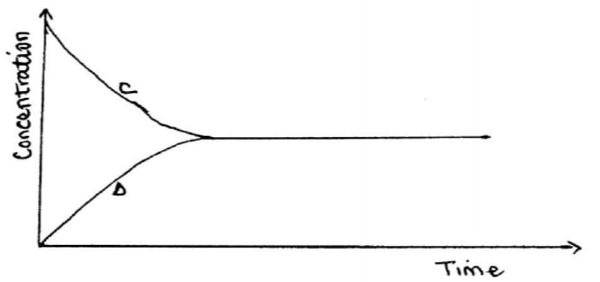
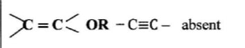

(g)+6H20(l) .
(c) State one use of ethane. (1 mark)
- as Fuel
- Production of ethene
- Production of hydrogen gas
6. (a) State Charles' Law. (1 mark)
- The volume of a fixed mass of a gas is directly proportional to the absolute temperature at constant pressure.
(b) Explain why the pressure of a fixed mass of a gas increases, when the volume of the gas is reduced at constant temperature. (2 marks)
- As the volume decreases, there is increased bombardment / collisions of the molecules against the walls of the container, hence increased pressure.
7. A sample of water is suspected to contain sulphate ions. Describe an experiment that can be carried out to determine the presence of sulphate ions. (3 marks)
- Add aqueous barium nitrate / barium chloride to sample; Followed by dilute nitric(V) acid or HCI;
- If white precipitate persists, then S042- ionsare present;
- If the precipitate dissolves then S042- ionsare absent.
OR
- Add lead(II) nitrate solution
8. (a) State one characteristic of a reaction where equilibrium has been attained. (1 mark)
- The concentrations of reactants and products remain constant or Rate of forward reactions is equal to the rate of backward reaction.
(b) The following equation is in a state of equilibrium: C D Use it to sketch a graphical representation of concentration against time in seconds for the equilibrium. (2 marks)


9. Copper(II) ions react with excess aqueous ammonia to form a complex ion.
(a) (i) Write an equation for the reaction that forms the complex ion. ( I mark)
Cu(OH)2(s)+ 4NH3 (aq) -> [Cu(NH 3)4]2++ (aq)+2OH-- (aq)
OR
Cu2+> (act), 4NH3 (aq) [Cu(NH3)4]2+(aq)
(ii) Name the complex ion. ( I mark)
- Tetraamine copper(II)ion
(b) Explain why CH4 is not acidic while HCl is acidic yet both compounds contain hydrogen. (1 mark)
- CH4 is a hydrocarbon, non-polar hence does not ionize in water. HCI is polar hence ionizes in water.
10. 20 cm3 of ethanoic acid was diluted to 400 cm3 of solution. Calculate the concentration of the solution in moles per litre. (C = 12.0 ; H = 1.0 ; 0 =16.0) (Density of ethanoic acid = 1.05 g/cm3) (3 marks)
Molar mass of ethanoic acid (CH3COOH) = 60g
Mass of ethanoic acid = 20 x 1.05g/cm3 =21g 21 60
Moles of ethanoic = 0.35 moles
Molarity = 0.35 400/1000 = 0.875M
11. An oxide of element K has the formula 1(205. (a) Determine the oxidation number of K. (1 mark)
= 2k+(5x-2)=0
2k=+10
k=+5
(b) To which group of the periodic table does K belong? (1 mark)
- Group 5
12. Potassium nitrate liberates oxygen gas when heated. Draw a diagram of a set-up that shows heating of potassium nitrate and collection of oxygen gas. (3 marks)

13. Explain the observation made when chlorine gas is passed through a solution of potassium iodide. (3 marks)
- A dark grey / brown solid is deposited / the solution turns black; chlorine is more reactive / a stronger oxidizing agent than iodine; Therefore displaces it from a solution of its ions OR
C12 (g) + 21- (aq) 2 Cr-(aq) + 12 (S)
14. Using the elements chlorine, calcium and phosphorus:
(a) Select elements that will form an oxide whose aqueous solution has a pH less than 7. ( I mark)
- Phosphorus and chlorine
(b) Write an equation for the reaction between calcium oxide and dilute hydrochloric acid. (1 mark)
- CaO(,) + 2HCI(,q) --> CaCl2(aq) + H2O)
(c) Give one use of calcium oxide. ( I mark)
- used to neutralize acidic soil / liming;
- drying vent;
15. Starting with copper, describe how a pure sample of copper(II) carbonate can be prepared. (3 marks)
- To copper turnings, add 50% concentration H2SO4 or HNO3 / Heat copper turnings to form copper(II) oxide and add dilute H2SO4 or HNO3 or HC1; To the resulting mixture, add excess sodium carbonate (soluble) Filter mixture; Rinse residue with water and dry between filter papers.
16. In an experiment, concentrated nitric(V) acid was reacted with iron(II) sulphate. State and explain the observations made. (2 marks)
- The mixture changed from green to yellow / formation of a brown gas; Iron(II) ions is oxidized by nitric(V) acid to Iron(III) ions / nitric(V) acid is reduced to nitrogen(II) oxide which is oxidized by oxygen to nitrogen(IV) ) oxide.
17. The flow chart in Figure 3 shows the process of obtaining a sample of nitrogen gas. Study it and answer the questions that follow.
(a) Identify X (I mark)
- Sodium hydroxide solution or Potassium hydroxide solution;
(b) Write an equation for the reaction with heated copper turnings.
(1 mark)
- 12 Cu(s) + 02(g ) -> 2 CuO (s)
(c) Name an impurity in the sample of nitrogen gas. ( I mark)
- Argon,
- Neon,
- Inert gases
18. The set-up in Figure 4 can be used to prepare nitrogen(II) oxide. Use it to answer the questions that follow.
(b) When the gas jar containing nitrogen(II) oxide is exposed to air, a brown colour is observed. Explain. (1 mark)
- Moderately concentration nitric(V) acid / 50% concentrated nitric(V) acid.
(c) Write an equation for the reaction which occurred in the flask. (1 mark)
3Cu (s) + 8HNO3 (aq) 3Cu (NO3)2 (aq)+ 4H2O +2NO
19. The following procedure was used to investigate the temperature changes that occur when sodium hydroxide solution is added to dilute hydrochloric acid.
(i) Place the acid in a glass beaker and record its temperature.
(ii) Add a known volume of sodium hydroxide solution.
(iii) Stir the mixture and record the highest temperature reached.
(iv) Repeat steps
(ii) and
(iii) with different volumes of sodium hydroxide solution.
(a) State two factors that must be kept constant in this experiment (1 mark)
- concentration of acid and base
- Volume of acid used.
(b) Explain how the use of a polystyrene cup will affect the results. (1 mark)
- Improves accuracy;
- Polystyrene is a plastic and will not absorb heat /minimum heat loss
20. Study the flow chart in Figure 5 and answer the questions that follow.
(a) Identify substances K and L. K: (1 mark)
K:- Ethanoic acid / (CH3COOH)
L:- Ethene (1 mark)
(b) Name one reagent that can be used to carry out process J. (1 mark)
- Acidified potassium dichromate(VI) OR acidified potassium manganate(VII)
21. The atomic numbers of some elements P, Q, R and S are 6, 8, 12 and 17 respectively.
(a) Draw the dot (-) and cross (X) diagrams for the compounds formed when:
(i) R and Q react (1 mark)

(ii) P and S react. (1 mark)

(b) Explain why the melting point of the compound formed by P and S is lower than that formed by R and Q. (1 mark)
- Rand Q form an ionic compound with strong ionic bonds while R and S form a covalent compound seith weak Van der Waals forces.
22. (a) What is an inert electrode? (1 mark)
- is one which does not participate in the reaction / does not affect the products of electrolysis / does not react; Anode - chlorine; Cathode - Hydrogen
(b) State the products formed when brine is electrolysed using inert electrodes.
Anode: (1 mark) - Chlorine
Cathode: (1 mark) - Hydrogen
23. Explain how a student can establish whether a liquid sample extracted from a plant is pure. (2 marks)
- Measure the boiling point / freezing point; -If the boiling point /freezing point is sharp, then liquid is pure.
24. Figure 6 shows part of the periodic table. The letters are not the actual symbols of the elements. Study it and answer the questions that follow.
(a) Write an equation for the reaction between M and K. (1 mark)
4M(s) +K,(g) —> 2M2K(S) OR 4K(s) + 02(g) 2K20(s)
(b) Select the element which can form an ion with a charge of +3. (1 mark)
- J should be placed in period 3, group 5 of the periodic table
(c) An element J has atomic number 15. Indicate with a tick (✓), on the part of the periodic table the position of J. (1 mark)
25. In terms of structure and bonding, explain why graphite is used as a lubricant in machines. (3 marks)
- Graphite consists of layers of carbon atoms;
- The layers are held together by the weak Van der Waals forces of attraction;
- These layers therefore slide over each other thus preventing machine to machine contact.
26. (a) What is meant by the term bleaching? (1 mark)
- Removal of original colour from a substance and the remaining substance is white / colourless
(b) Write the formula of the bleaching agent formed when chlorine gas reacts with aqueous sodium hydroxide. ( 1 mark)
- NaCIO / NaOCI
(c) State the role of chlorine in water treatment. (1 mark)
- Kill germs / bacteria / microorganisms
27. (a) Name two ores in which sodium occurs. ( 1 mark)
- rock salt /NaCI / trona ;
- salt petre/ NaNO3.
(b) During extraction of sodium using the down's process, calcium chloride is added to the ore. Give a reason for the addition of calcium chloride. (1 mark)
To lower the melting point from 800°C to about 600°C;
(c) State two uses of sodium. ( I mark)
- street lighting;
- coolant in nuclear reactors;
- extraction of titanium;
- extraction of gold;
- manufacture of sodium cyanide;
- manufacture of sodium peroxide.
28. When an aqueous solution of compound X was mixed with a few drops of bromine water, the colour of the mixture remained yellow. When another portion of solution X was reacted with acidified potassium dichromate(VI), the colour of the mixture changed from orange to green.
(a) What conclusion can be made from the use of:
(i) bromine water? (1 mark)

Alkene, alkyne/ unsaturated hydrocarbon absent
(ii) acidified potassium dichromate(VI)? (1 mark)
- OH / R - OH present
(b) Solution X was reacted with a piece of a metal and a colourless gas was produced. Describe a simple experiment to identify the gas. (1 mark)
Lower a burning splint to the gas, a 'pop' sound should be produced showing it is hydrogen.